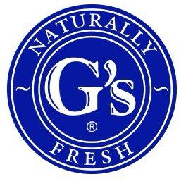

G's España - Modernización ERP
Lideré la transformación digital completa, implementando soluciones ERP avanzadas y optimizando procesos críticos del negocio.
35% mejora eficiencia
500+ usuarios
Proyecto Finalista INCIBE Emprende
Idea innovadora en el campo de la ciberseguridad reconocida por INCIBE (Instituto Nacional de Ciberseguridad) en el programa INCIBE Emprende, financiado por la Unión Europea.
Finalista destacado
Ciberseguridad
Andorra Telecom - Portal Integrado
Desarrollo e implementación de un portal de proveedores completamente integrado con JD Edwards, optimizando la gestión de la cadena de suministro.
40% reducción tiempos
100+ proveedores
Fujikura - Modernización de Sistemas
Migración exitosa de sistemas y optimización de procesos de distribución eléctrica, implementando mejoras significativas en la eficiencia operativa.
25% más rápido
15+ procesos
Original Buff - Mejora de Procesos
Implementación de mejoras en el rendimiento de aplicaciones y optimización de comunicaciones EDI para la gestión de la cadena de suministro.
30% más eficiente
50+ integraciones